Кит-лист
Список снаряжения.
(Звёздочками отмечено, что нужно приобрести в первую очередь)
Сюда добавить какое-то предисловие типа мы покемоны, нам похуй, главное, чтобы арка и мультикам, и вообще, чтобы человек хороший был и т.д. и т.п. Но, если надо, вот кит-лист.
1. Очки* Не экономьте на зрении! Через глаза вы получаете до 95% информации о мире, поэтому их травма недопустима! Очки могут запотевать, покрываться царапинами, когда вы их протираете от влаги и пыли пальцами. Протирайте их только специальными мягкими безворсовыми салфетками-тряпочками для очков. Продаются в магазинах оптики, фотомагазинах (специализированные салфетки для оптики). Рекомендуются оригинальные очки марок: ESS (Ice, Naro, Crossbow), Wiley Х, Bolle, Revision и подобные, отвечающие требованиям военных под защите глаз от скоростных частиц.


2. Кепи- Бейсболка без сеточки, полностью закрытая* Желательно иметь велкро для опознавательных\цветовых патчей. Цвет: мультикам. Хорошие фирмы: Ars Arma, Emerson, TMC, Helikon.


3. Панама Первый головной убор, который может считаться элементом маскировки. Одновременно защищает от солнца и насекомых на деревьях, и в то же время с помощью специальных шлевок позволяет закрепить элементы растительности на голове, разбивая силуэт вверху. Отечественные производители: Гиена тактикс, Стич профи, Корпус выживания.

4. Шапка. На фото ниже оригинал. Более ранние - серого цвета, более новые-койот.
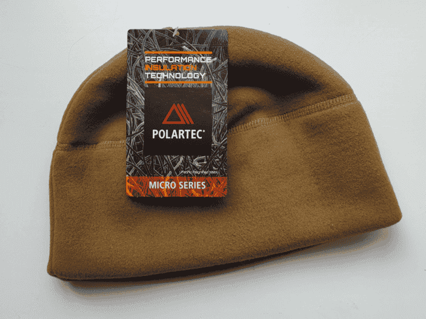5. Балаклава* Обязательный элемент экипировки. Защищает от ветра, солнца, ослабляет удар шара (если все таки пропустите). Бывает облегченная летняя и утепленная зимняя. Цвет: мультикам.
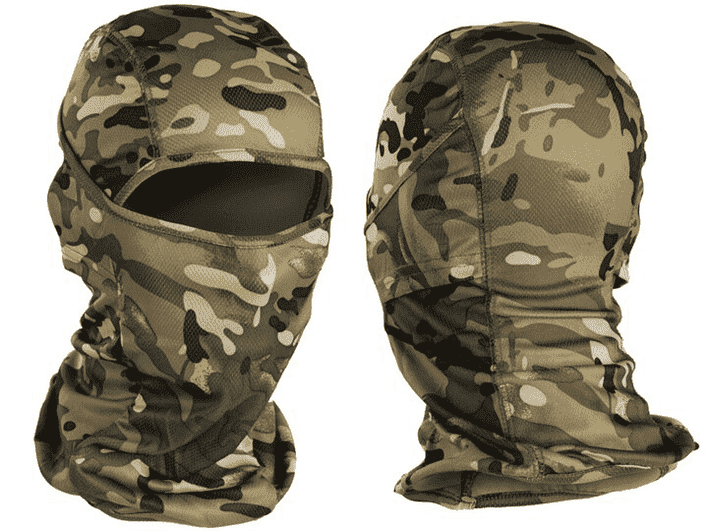6. Бафф, Шарф-труба. Как и балаклава бывает легкий летний для защиты от солнца и пыли, так и зимний утепленный для защиты шеи от холода. Цвет: мультикам.
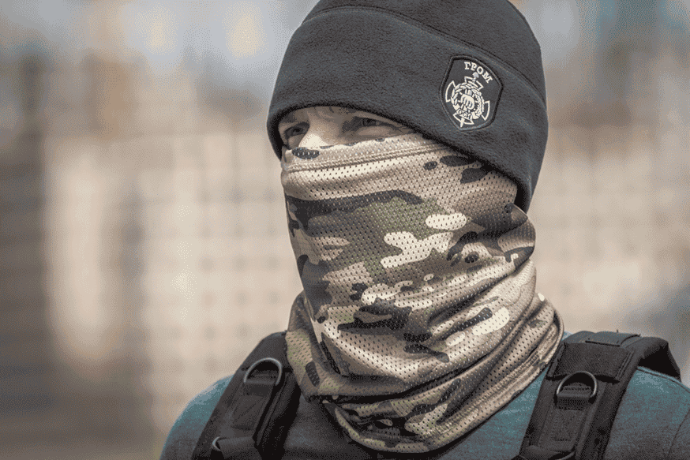7. Сетка-шарф маскировочная Необязательный элемент экипировки, служит для тех же целей, что и бафф. Но может разматываться в полноценное защитное или маскировочное покрывало.
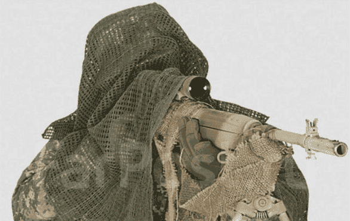8. Кавер на шлем
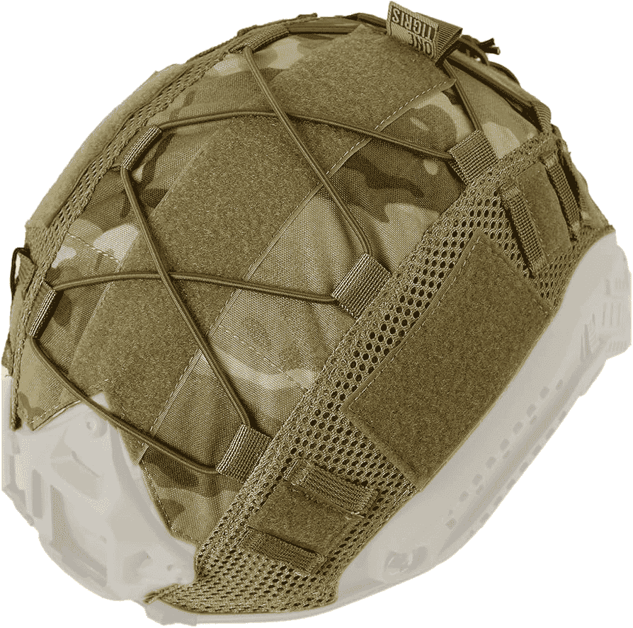9. Перчатки полнопалые * Мы используем перчатки Mechanix, полнопалые для защиты пальцев от стекол, колючек и прочих неприятностей. Цвет: койот или мультикам. Разрешены другие марки изготовителей
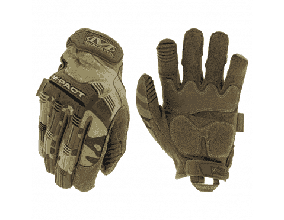10. Рубаха боевая, Army Combat Shirt Gen3* Crye Precision, Massif, XGO Арс Арма Emerson TMC
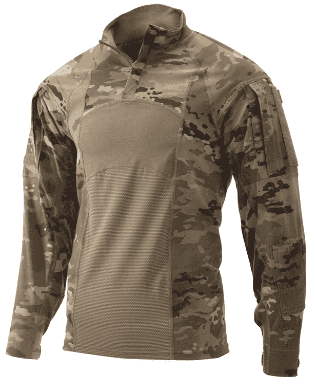 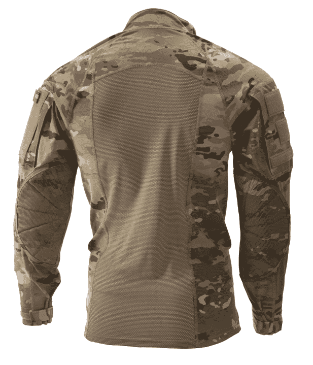11. Китель всепогодный, L9 Temperate Blouse. Применяется как элемент всепогодной полевой формы. Оригинал: Patagonia
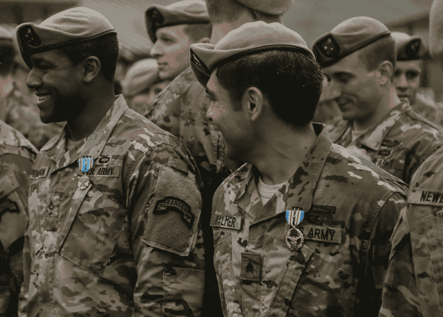12. Флисовая кофта, L3 ECWCS. Базовый утепляющий слой. Структура флиса имитирует мех. Материал обеспечивает утепление, обладает паропроницаемостью, быстро сохнет, и при этом мало весит. Кофта надевается для дополнительного согревания на второй слой либо поверх униформы. Подвергающиеся нагрузке части усилены тканевыми накладками. По бокам имеются вставки из Polartec Power Dry Grid для улучшения вентиляции. Имеются два внешних и два внутренних кармана.
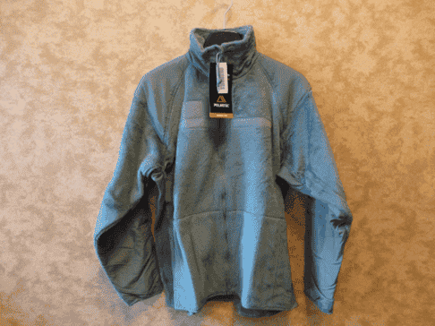13. Ветровлагозащитная куртка L5 ECWCS * Куртка и брюки из Soft Shell. Базовый слой, центральный элемент комплекса, под него и на него надеваются другие слои. Обладает ветрозащитными и водоотталкивающими свойствами, достаточными для предотвращения намокания во время дождя умеренной интенсивности, великолепными паропропускающими характеристиками, низким весом и компактностью в сложенном состоянии. Покрой довольно свободный. Куртка имеет двунаправленную молнию с дополнительным клапаном, убираемый в воротник капюшон, 4 кармана, застежки-липучки на карманах и манжетах. Брюки комплектуются съемными подтяжками с фронтальным креплением, имеют 4 кармана, две верхние боковые молнии с регулировкой объема пояса на липучках и две нижние молнии, позволяющие надевать брюки, не снимая обувь. Ориги: Patagonia, Rothco, Beyond Industries. Копии: HeliconTex TMC Allwin
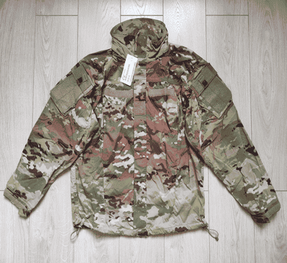14. Теплая зимняя куртка, L7 ECWCS ORC Industries Beyond Industries Sekri Industries
15. Влагозащитный костюм ECWCS L6. Либо: накидка дождевая, пончо. Цвет: мультикам.
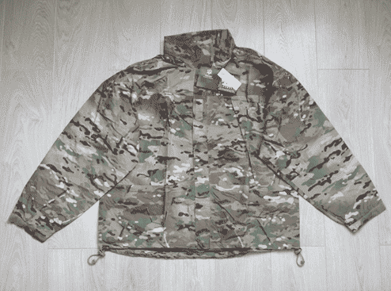 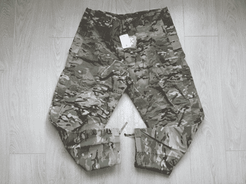16. Брюки боевые, Army Combat Pants Gen3. В свое время сама их концепция стала революционной: удобный крой, множество карманов, а главное – отдельные наколенные карманы под защитные полужесткие вставки, предохраняющие колени при падениях. В карманах брюк предусмотрены несколько утяжек для широкого регулирования размера под владельца. Выполняются из нескольких типов тканей: AllWeather FR Classic RipStop Оллвезер – облегченные, хорошо дышащие, малопродуваемые брюки. FR – сделанные из негорючей ткани. Предпочтительны для экипажей боевых машин, хуже дышат, но ткань более плотная, чем у ОллВезер Классика – без комментариев. Рипстоп, он и есть рипстоп. Ткань в мелкую клеточку, для предохранения от разрывов. Цвет только мультикам. Обратите внимание: копии часто делаются с одноцветной вставкой из тянущейся ткани над наколенниками. Это наследие от брюк второго поколения (AC2). На фото встречаются все реже и реже. Лучше искать со вставками в мультикаме. Оригинал: Crye Precision. Копии: Ars Arma, Emerson, TMC.
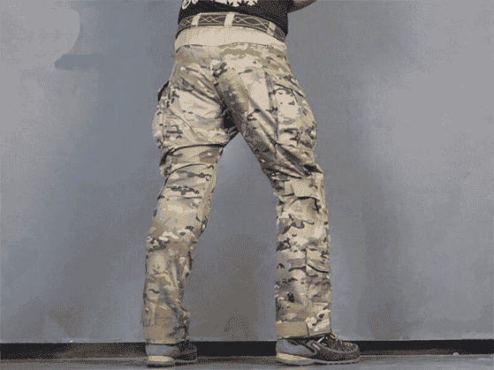17. Наколенники Сrye Precision Knee Pad gen2, gen3, gen4* Оригинал понятно, кто делает, из названия. Копии делают: Emerson, TMC.
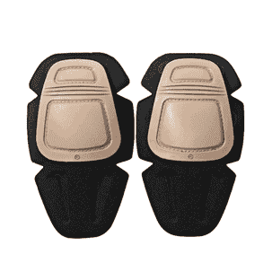
18. Гамаши. Нужны для защиты обуви и нижней части штанов от влаги. Необязательный элемент, но удобство нахождения на природе в ненастье повышает. Outdoor Research, Корпус Выживания, Ars Arma.
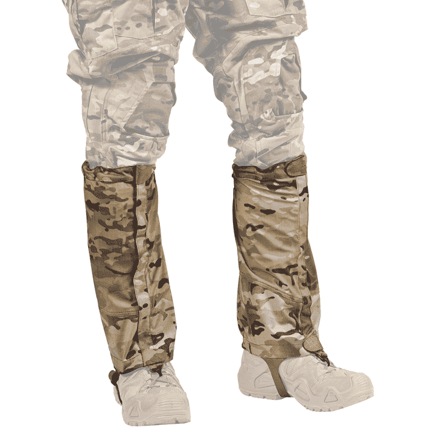19. Ботинки* Цвет рекомендуется песочный. Обувь – единственное, что не регламентируется строго. Исходите из ваших возможностей не в ущерб ощущениям ног в ботинках. На фото с тренировок можно видеть, что бойцы 75 Ranger Regiment не имеют единого типа и расцветки обуви, каждый исходит из личного удобства. Оригиналы: Lowa, Danner, Bates, Altama, Haix. Копии: YDS, Vogel.
20. Бронежилет. JPC ver 1 / 2 (Jumpable Plate Carrier) JPC - это известный легкий плейткерриер производства компании Crye Precision В основе JPC лежит идея полного, тотального облегчение всей конструкции, которое позволило бы уменьшить общий вес носимого снаряжения, сохранив функциональность как жилета-плитоносца, так и платформы для крепления подсумков.
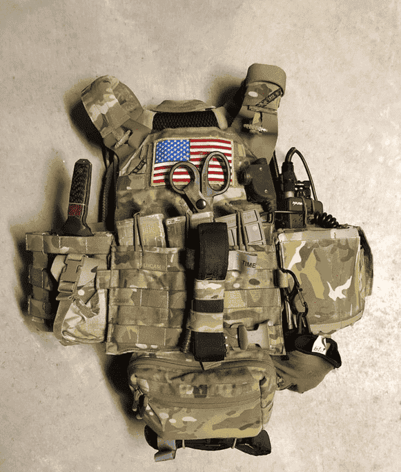 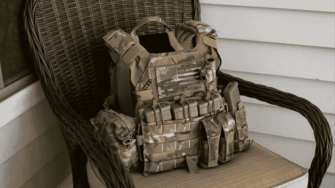 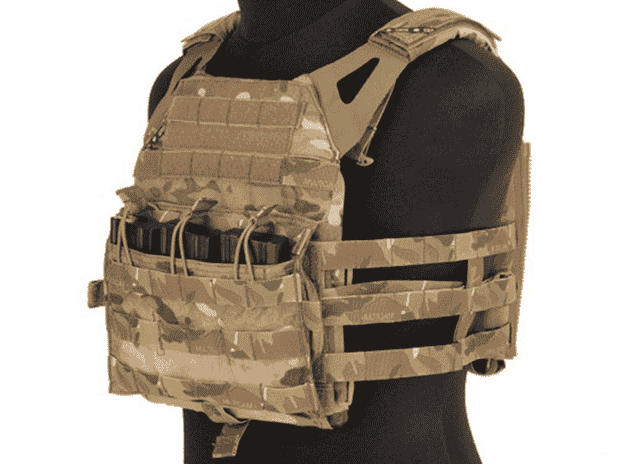AVS Более современной, массово встречающейся версией бронезащиты является AVS (Advanced Vest System). Он базово состоит из переднего и заднего чехлов для плит (плэйт-бэгов), и корсета-harness, который является как бы скорлупой с поясом, на который крепятся плейтбеги. Это позволяет при желании снять нагрузку с плеч оператора, и переложить её на торс, одновременно, мягкая шнуровка корсета позволяет более легко дышать. В комплект сразу потребуется докупить -каммербанды -подушки для плечевых ремней -КАПы -передний откидной подсумок-флеп для магазинов, или флеп-панель с молле, на которой вы сами закрепите свои любые подсумки.
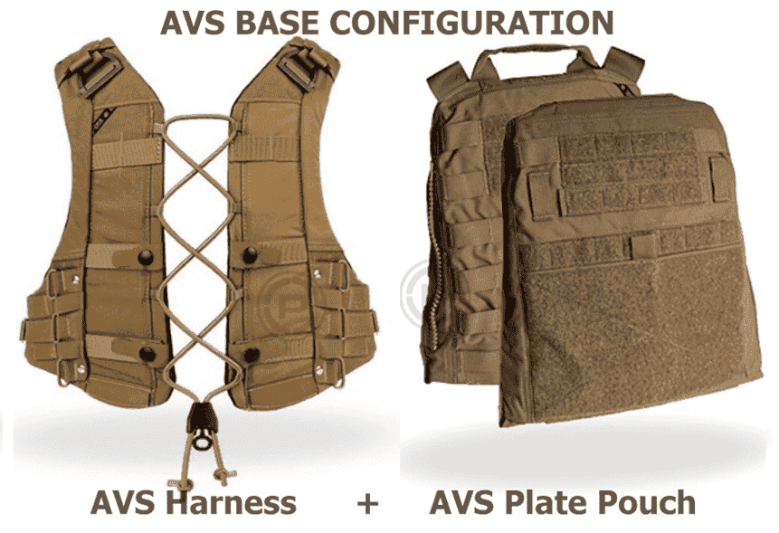 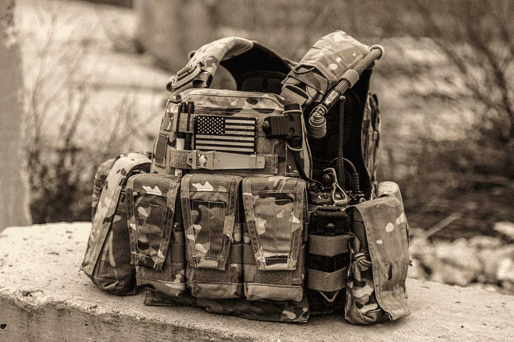
21. Шлем Ops-Core FAST Super High Cut (Maritime)* В 75 Полку Рейнджеров США используется шлем от компании OpsCore FAST Super High Cut (Maritime). Для большего понимания, как правило, используется второе его название — Maritime. Также на выдаче 75 Полка Рейнджеров США стоит шлем от OpsCore модели Super High Cut SF. Выдавать его начали недавно (начало 2023г), на фото он редкость. Поэтому рекомендуется Маритайм. Игровой шлем нужен для защиты головы от попадания шаров, падения сверху крупных частиц, для защиты головы от случайных ударов при игре в зданиях.
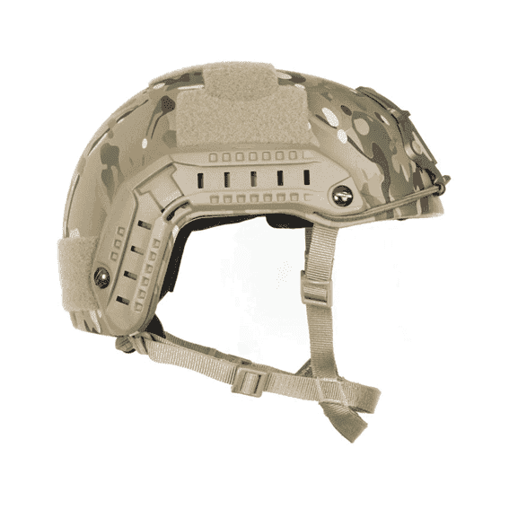
22. Боевой пояс, варбелт, warbelt*
MRB, Ronin, LPB, AVS Belt
Современный боевой пояс стал неотъемлемым элементом экипировки современного бойца. Недаром он называется «первый эшелон снаряжения»: практически всегда он остается на теле бойца, и обеспечивает небольшой боекомплект, допснаряжение, возможность оказать мед.помощь.
Имея нормальный боевой пояс вы практически всегда готовы к внезапному столкновению.
Поэтому рекомендуется на поясе:
- 2-4 магазина к основному оружию
- Доп оружие и магазин к нему
- Нож
- Аптечка
- Сброс
- Гранатные подсумки, если хватит места
Отдельный нож и гранатные подсумки, например, можно заменить подсумком общего назначения, в котором будет мультитул и прочее имущество подобного рода.
Crye Precision,
АрсАрма.
23. Основное оружие* Страйкбольные привода Mk18 mod 0/1/2, M4A1 в комплектации SOPMOD Block 2/3.
24. Дополнительное оружие Glock 17, 19, Mk23 SOCOM.
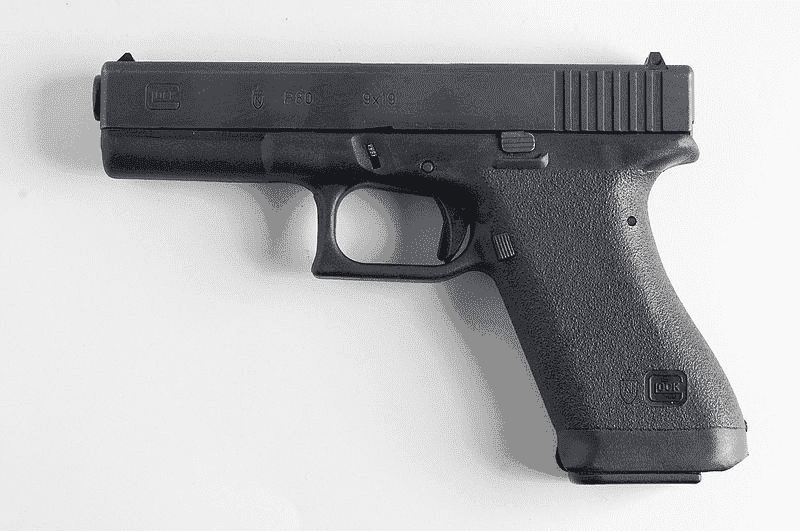 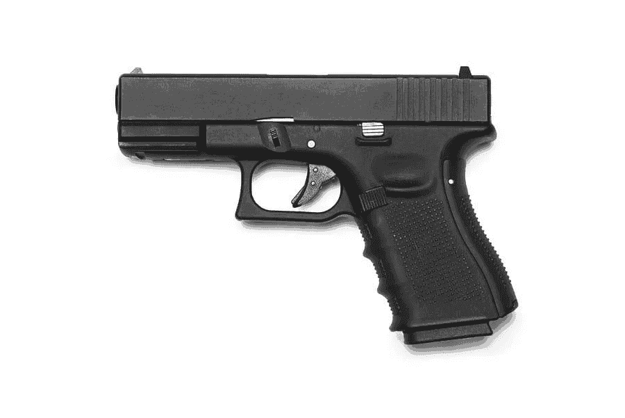 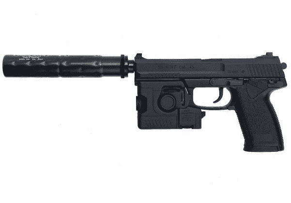